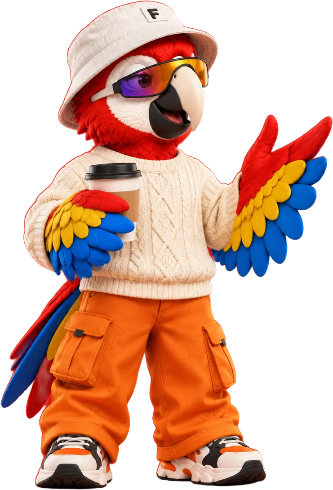
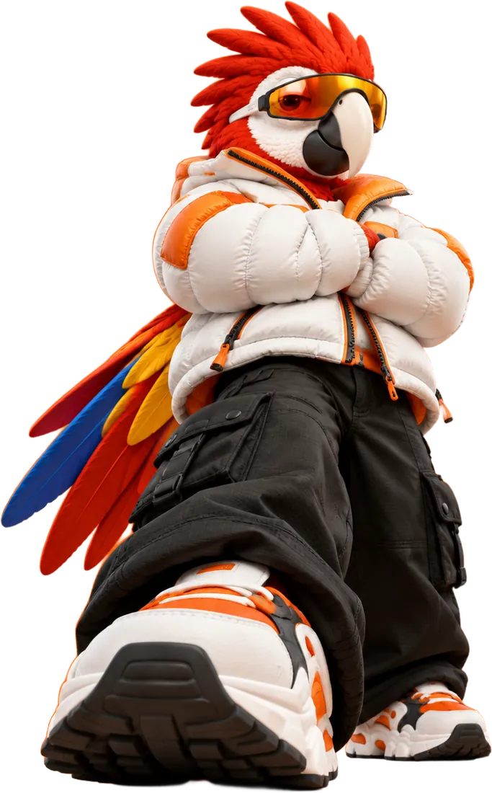
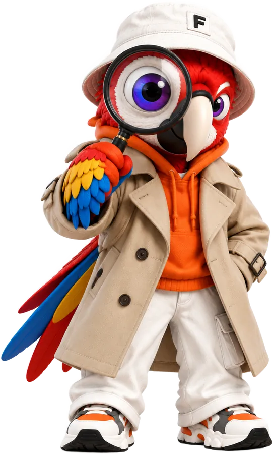
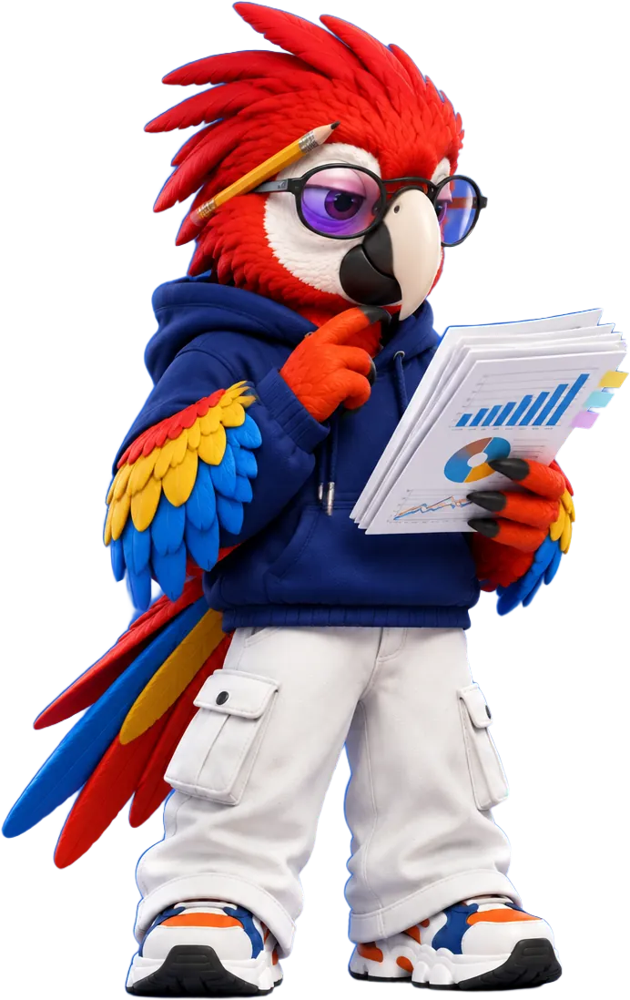
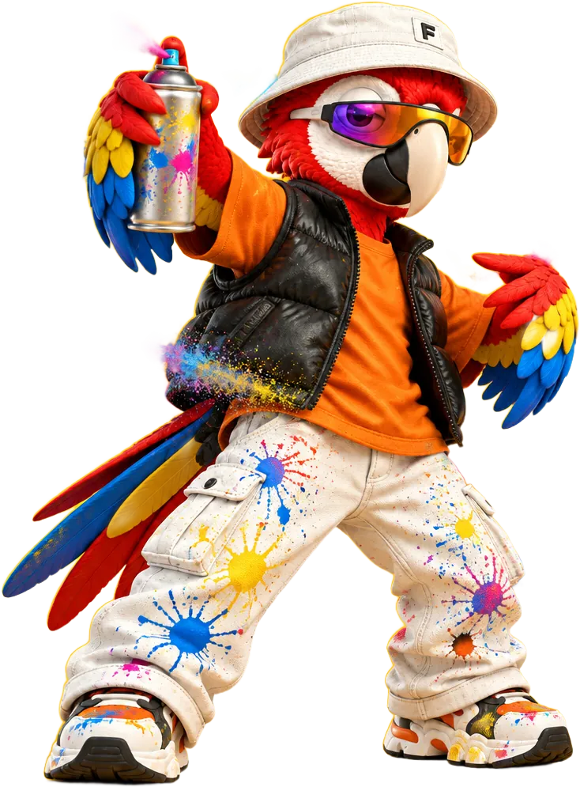
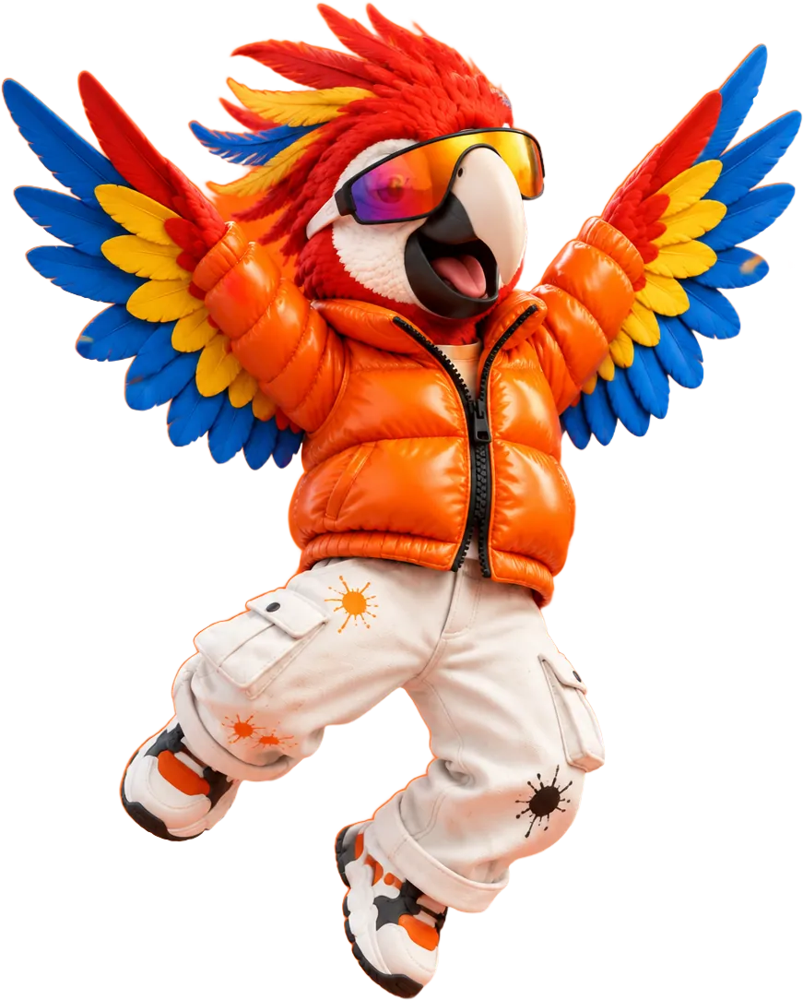
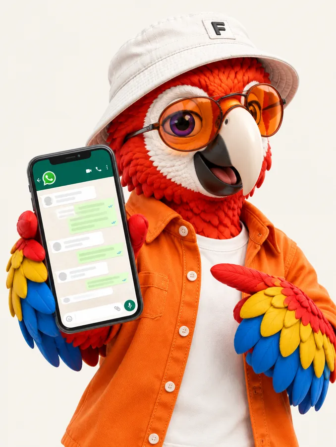

01
Conversa
Você conta do seu negócio e do seu cliente.

Sites que fazem o seu cliente ficar e comprar.
Quero um site assimAcontece todo dia
Ele te achou no Google, cansou de esperar e foi pro concorrente.
A prova é esta página
Foi o tempo que este site levou pra abrir. O seu pode ser assim.
Cada detalhe do seu site tem um porquê.
pra alguém julgar o seu site
saem se o site passa de 3 segundos
preferem chamar a empresa por mensagem
leem avaliações antes de comprar
Fontes: Carleton University, Google/SOASTA, Reclame Aqui
Antes de desenhar qualquer coisa
A gente estuda o seu mercado como se o negócio fosse nosso.

Do primeiro oi até o site no ar

Você conta do seu negócio e do seu cliente.

A gente estuda o seu mercado e os concorrentes.

Design com a sua cara, feito pra levar ao contato.

Você aprova e o site vai pro ar.

Atendimento
Você conversa direto com quem vai criar o seu site. Sem fila, sem formulário, sem resposta automática.
Cada projeto é pensado pro seu negócio, então o valor depende do que você precisa. Manda uma mensagem no WhatsApp que a gente monta o seu orçamento.
Sim. O atendimento é 100% online, pra qualquer lugar do Brasil.
Pode. Durante o projeto você acompanha e pede ajustes, e depois que o site vai pro ar a gente continua ajudando.
Não precisa. Se você ainda não tem o endereço do site (tipo seunegocio.com.br), a gente te orienta a registrar.
Funciona. A maior parte dos seus clientes vai te achar pelo celular, então o site é pensado primeiro pra tela pequena.